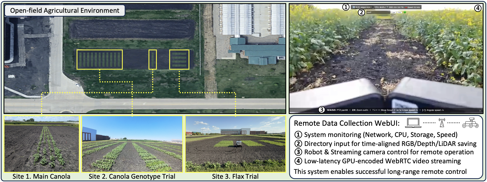
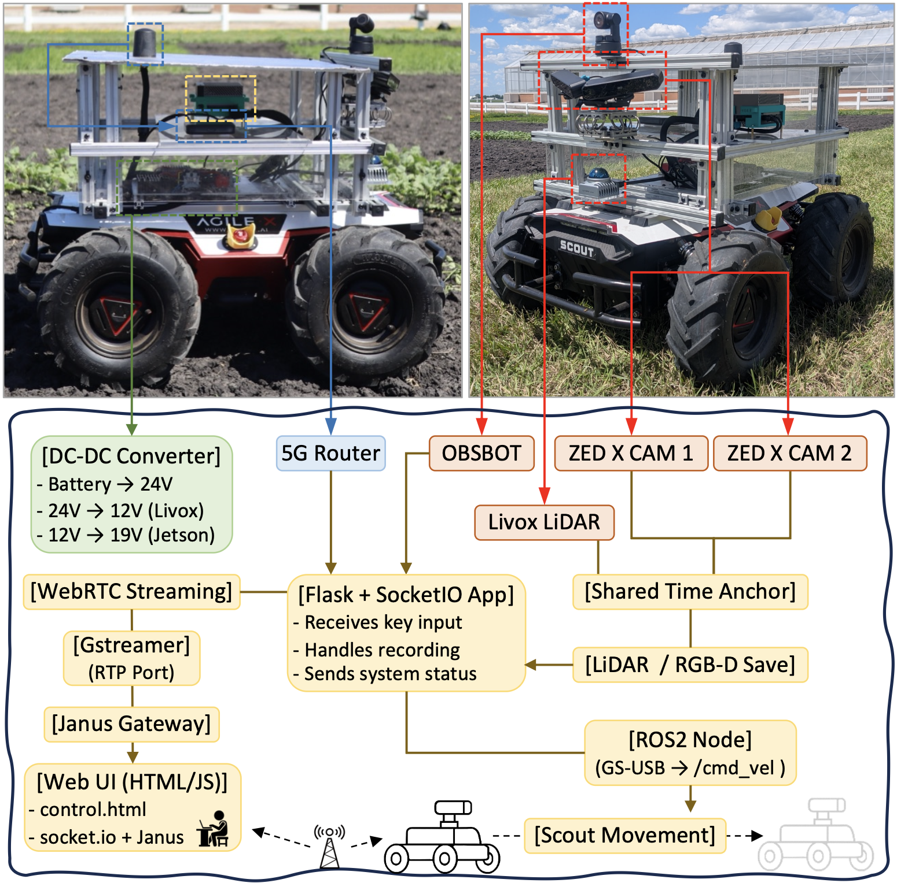
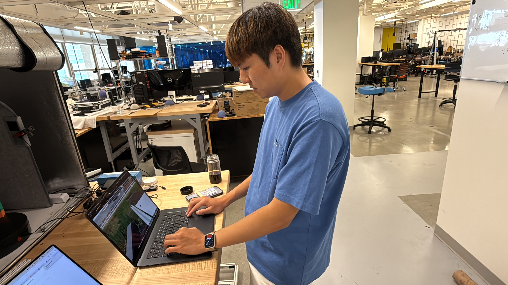
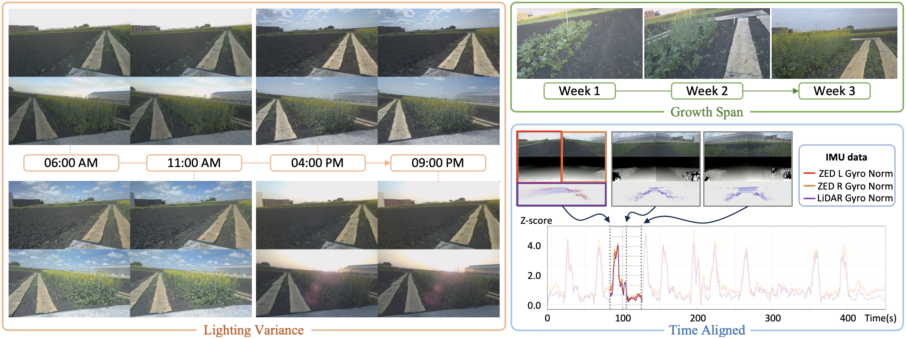
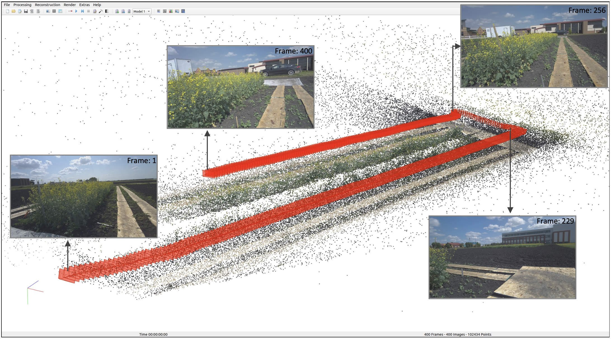
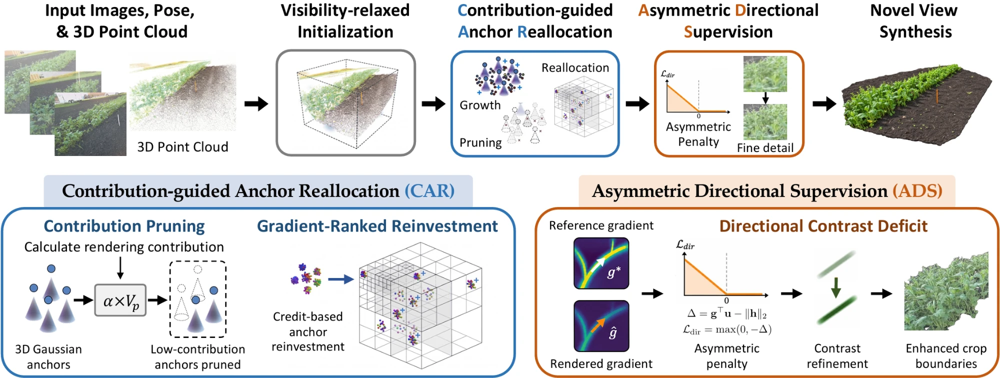
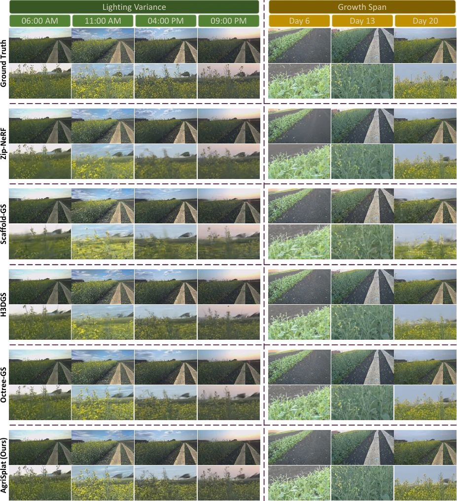

AgriChrono: A Longitudinal Dataset and Benchmark for Novel-View Synthesis of Field-Grown Crops
Under review, 2026


Project Collaboration NDSU (left) and UCLA (right)
TL;DR
We present AgriChrono, an integrated framework connecting robotic acquisition, dataset construction, novel-view synthesis (NVS) benchmarking, and agricultural scene reconstruction for field-grown crops. Our AgriChrobot platform supports web-based teleoperation and repeated multi-view acquisition along crop rows, yielding a longitudinal canola dataset of 160 recording sessions over approximately one month. We establish seven NVS scenarios (four times of day, three acquisition dates) and evaluate 15 NeRF- and Gaussian Splatting-based methods, including fine-detail metrics within manually annotated canola regions. The benchmark reveals that competitive whole-image performance does not necessarily translate into faithful reproduction of fine crop details. Motivated by this, we propose AgriSplat, combining Contribution-guided Anchor Reallocation (CAR) and Asymmetric Directional Supervision (ADS), which improves the crop-region gradient-energy ratio from 0.506 to 0.847 and edge F-score from 0.712 to 0.797 over Octree-GS, averaged across seven scenarios, while also improving whole-image PSNR, SSIM, and LPIPS.
Key Contributions
- AgriChrobot — a custom-designed multi-sensor robotic platform supporting web-based remote operation and repeated multi-view field data acquisition.
- AgriChrono — a longitudinal canola dataset comprising 160 sessions capturing crop-development and illumination variations, providing RGB images, stereo-derived depth maps, and camera-pose estimates.
- NVS Benchmark — a standardized seven-scenario evaluation of 15 NeRF- and 3DGS-based methods, incorporating whole-image rendering quality, fine-detail reproduction within manually annotated canola regions, and computational cost.
- AgriSplat — a 3DGS-based reconstruction method combining CAR and ADS to improve rendering quality and fine-detail reproduction within canola regions.
Project Design
1. Field & Remote Operation

Site 1 is the main canola field (InVigor L340PC, a plot of about 15.2×0.91 m) used for repeated observations of crop development and natural illumination; Site 2 is a canola genotype trial and Site 3 is a flax trial with different cultivation treatments, all at the North Dakota State University (NDSU) experimental field. The robot traversed Site 1 in clockwise and counterclockwise directions at a target speed of about 0.2 m/s, recording at about 15 frames/s, and was operated through a WebRTC-based web interface offering system monitoring, recording directory and session management, robot and PTZ camera control, and low-latency video streaming. Site 1 provides the primary observations analyzed in the paper; Sites 2 and 3 are documented in the Supplementary Material. (For an overview, see GitHub.)
2. Robot Platform Design

AgriChrobot is built on an AgileX Scout 2.0 UGV with a custom three-tier sensor frame and protective chassis. The lower tier holds power conversion modules and an auxiliary
Livox Mid-360 LiDAR; the middle tier houses two ZED X stereo cameras (4-mm lenses, adjustable three-axis supports with passive vibration isolation), an
NVIDIA Jetson AGX Orin (64 GB), and a 5G communication module; the upper tier supports an OBSBOT PTZ camera and an omnidirectional antenna for remote observation.
Aluminum–acrylic panels and a sun shield protect the assembly outdoors, and DC-DC converters supply the 12 V (LiDAR) and 19 V (Jetson) rails from the 24 V battery.
The two stereo units face different forward-oblique directions, providing four RGB streams in total.
(See Hardware GitHub.)
The onboard software integrates ROS 2 Humble for vehicle control, a CAN-bus interface to the Scout platform, and a browser-based interface for remote operation.
A Flask and Socket.IO backend manages operator commands, recording control, and system status, while video feedback is streamed through a WebRTC pipeline (GStreamer and Janus Gateway).
A zero-velocity stop command is issued when the browser connection is lost or the control interface loses focus. The two ZED X units record .svo2 streams with a shared session-start time reference,
and RGB images, depth maps, and VIO poses are extracted offline to build the dataset.
(See Software GitHub.)

3. Data Collection Protocol

AgriChrono was collected at the NDSU experimental field in Fargo from July 2 to August 1, 2025. From July 2 to 21, acquisitions were scheduled at approximately
06:00, 11:00, 16:00, and 21:00 to observe the field under different natural illumination; afterwards the frequency was reduced as crop growth slowed and as rain and muddy ground affected the schedule.
The Site 1 dataset comprises 160 recording sessions (80 rounds of one CW and one CCW traversal; 559,575 time-indexed samples over 37,932 s at 14.7 FPS; about 13.7 TB).
Each session provides four 1920×1080 RGB streams from two ZED X stereo cameras, two depth maps (ZED SDK neural depth) aligned with the left cameras, and
6-DoF VIO camera poses, organized per session with raw .svo2 streams, rectified .png pairs, .npz depth, and .csv metadata (IMU, poses); LiDAR recordings are included in the full archive.
The repository is released in four configurations: the full 18 TB multi-modal repository, a 1.2 TB sample subset, a 162 GB benchmark subset for the seven NVS scenarios, and a 5.4 TB stereo-only RGB variant.
(See Dataset GitHub.)
4. 3D Reconstruction Benchmark

We establish seven NVS scenarios from the counterclockwise (CCW) traversals at Site 1: four Lighting Variance sessions at 06:00, 11:00, 16:00, and 21:00 on Day 19,
and three Growth Span sessions at 06:00 on Days 6, 13, and 20. For each scenario, we sample every seventh frame of the left RGB stream of ZED-L, obtaining
400 images at 960×540 (350 for training, 50 uniformly distributed images held out for evaluation) with camera poses from VIO and an initial point cloud from 0.1% of the depth points of the training frames.
Each scenario is reconstructed independently, so the benchmark evaluates held-out-view rendering within individual traversals. We compare 15 baselines
(11 Gaussian Splatting-based and four NeRF-based methods) using NerfBaselines v1.2.12 with default configurations, and evaluate both the whole image and manually annotated canola regions
(SSIMC, LPIPSC, GERC, EdgeFC).
Averaged across the seven scenarios, all 15 baselines exhibit crop-region gradient-energy ratios below one: competitive whole-image performance does not necessarily translate into faithful reproduction of fine details in thin and overlapping crop structures.
(Dataset download: Benchmark GitHub
· Leaderboard: Benchmark Page)
5. AgriSplat

Overview of AgriSplat. Given input images and an initial 3D point cloud, AgriSplat begins with visibility-relaxed anchor initialization. During anchor growth, Contribution-guided Anchor Reallocation (CAR) prunes low-contribution anchors and reinvests the resulting credit into eligible sub-threshold candidates ranked by gradient magnitude. After anchor growth and reallocation, Asymmetric Directional Supervision (ADS) refines rendering under a fixed anchor topology while continuing to optimize the trainable Gaussian parameters. ADS penalizes insufficient rendered contrast along reference image-gradient directions to improve the reproduction of fine crop structures. The lower panels illustrate the CAR and ADS mechanisms.
Novel View Synthesis Benchmark
| Method | Canola Region (mean of 7 scenarios) | |||
|---|---|---|---|---|
| SSIMC ↑ | LPIPSC ↓ | GERC →1 | EdgeFC ↑ | |
| SeaThru-NeRF | 0.336 | 0.850 | 0.024 | 0.021 |
| Nerfacto | 0.337 | 0.767 | 0.047 | 0.100 |
| Tetra-NeRF | 0.433 | 0.635 | 0.120 | 0.254 |
| Zip-NeRF | 0.560 | 0.375 | 0.378 | 0.637 |
| 3DGS | 0.507 | 0.530 | 0.340 | 0.540 |
| Scaffold-GS | 0.467 | 0.530 | 0.394 | 0.586 |
| Taming 3DGS | 0.513 | 0.507 | 0.352 | 0.566 |
| 3DGRT | 0.497 | 0.516 | 0.337 | 0.550 |
| H3DGS | 0.516 | 0.363 | 0.517 | 0.709 |
| GS-W | 0.375 | 0.791 | 0.087 | 0.173 |
| 3D-MCMC | 0.425 | 0.736 | 0.144 | 0.299 |
| PGSR | 0.465 | 0.598 | 0.267 | 0.462 |
| gsplat | 0.495 | 0.548 | 0.316 | 0.514 |
| 3DGUT | 0.383 | 0.699 | 0.122 | 0.261 |
| Octree-GS | 0.533 | 0.391 | 0.506 | 0.712 |
| AgriSplat (Ours) | 0.560 | 0.273 | 0.847 | 0.797 |
Canola Region NVS performance on Site 1 (SSIM, LPIPS, gradient-energy ratio GER, and edge F-score), averaged over the seven scenarios for 15 baselines and AgriSplat (mean of three seeds). Higher SSIM and EdgeF and lower LPIPS are better; GER is best when closest to 1. Bold = best, underline = second best. Whole-image metrics and training cost are on the Benchmark Page.
| Method | Metric | Lighting Variance (Day 19) | Growth Span (06:00 AM) | |||||
|---|---|---|---|---|---|---|---|---|
| 06:00 AM | 11:00 AM | 04:00 PM | 09:00 PM | Day 6 | Day 13 | Day 20 | ||
| Zip-NeRF | SSIMC ↑ | 0.553 | 0.448 | 0.468 | 0.560 | 0.620 | 0.669 | 0.602 |
| LPIPSC ↓ | 0.482 | 0.403 | 0.410 | 0.474 | 0.238 | 0.282 | 0.336 | |
| GERC →1 | 0.253 | 0.367 | 0.362 | 0.244 | 0.555 | 0.454 | 0.412 | |
| EdgeFC ↑ | 0.369 | 0.763 | 0.712 | 0.391 | 0.890 | 0.712 | 0.618 | |
| Scaffold-GS | SSIMC ↑ | 0.512 | 0.318 | 0.392 | 0.532 | 0.516 | 0.554 | 0.447 |
| LPIPSC ↓ | 0.593 | 0.606 | 0.566 | 0.587 | 0.323 | 0.437 | 0.595 | |
| GERC →1 | 0.290 | 0.433 | 0.345 | 0.289 | 0.554 | 0.468 | 0.378 | |
| EdgeFC ↑ | 0.328 | 0.771 | 0.676 | 0.317 | 0.870 | 0.648 | 0.492 | |
| H3DGS | SSIMC ↑ | 0.574 | 0.366 | 0.414 | 0.574 | 0.547 | 0.615 | 0.523 |
| LPIPSC ↓ | 0.377 | 0.435 | 0.406 | 0.393 | 0.253 | 0.300 | 0.376 | |
| GERC →1 | 0.440 | 0.502 | 0.511 | 0.444 | 0.659 | 0.562 | 0.497 | |
| EdgeFC ↑ | 0.525 | 0.835 | 0.794 | 0.521 | 0.901 | 0.736 | 0.650 | |
| Octree-GS | SSIMC ↑ | 0.589 | 0.390 | 0.429 | 0.581 | 0.590 | 0.625 | 0.528 |
| LPIPSC ↓ | 0.393 | 0.469 | 0.435 | 0.428 | 0.268 | 0.325 | 0.419 | |
| GERC →1 | 0.467 | 0.449 | 0.502 | 0.419 | 0.674 | 0.558 | 0.472 | |
| EdgeFC ↑ | 0.564 | 0.819 | 0.799 | 0.511 | 0.905 | 0.740 | 0.646 | |
| AgriSplat (Ours) | SSIMC ↑ | 0.609 | 0.411 | 0.443 | 0.596 | 0.634 | 0.670 | 0.556 |
| LPIPSC ↓ | 0.277 | 0.325 | 0.327 | 0.291 | 0.186 | 0.213 | 0.288 | |
| GERC →1 | 0.785 | 0.824 | 0.798 | 0.793 | 0.977 | 0.916 | 0.838 | |
| EdgeFC ↑ | 0.686 | 0.888 | 0.844 | 0.680 | 0.924 | 0.807 | 0.751 | |
Scenario-wise Canola Region performance of AgriSplat and four representative methods. Bold = best, underline = second best per column.

Qualitative comparison of novel view synthesis results. Rows show the Ground Truth and the renderings of Zip-NeRF, Scaffold-GS, H3DGS, Octree-GS, and AgriSplat (Ours); two test views are shown per scenario for the Lighting Variance (06:00 AM–09:00 PM, Day 19) and Growth Span (Day 6, 13, 20) scenarios.
Conclusion
We presented AgriChrono, a longitudinal dataset and benchmark for novel-view synthesis of field-grown crops, supported by the AgriChrobot acquisition platform: 160 canola recording sessions over approximately one month, and seven evaluation scenarios spanning natural illumination and crop-development stages. Evaluating 15 NeRF- and Gaussian Splatting-based methods showed that competitive whole-image quality does not necessarily translate into faithful reproduction of fine crop details. Motivated by this, we introduced AgriSplat, which combines CAR and ADS and improves whole-image quality, crop-region perceptual similarity, gradient-energy agreement, and edge correspondence over Octree-GS. Future work may extend the evaluation to additional crop types, field environments, and reconstruction across acquisition dates.
Acknowledgement
Experimental farm facilities, on-site data collection support, and agricultural domain expertise provided by North Dakota State University (NDSU).
This work was supported in part by the U.S. Department of Agriculture (Grant No. 2024-67021-42528 and 2022-67022-37021), the Korea Creative Content Agency (KOCCA) under Grant RS-2024-00345025, and the Institute of Information & Communications Technology Planning & Evaluation (IITP) funded by the Korean government (MSIT) under Grant No. RS-2019-II190079. This research was also supported by the AI Seoul Tech Research Support Program of the Seoul Future Foundation.